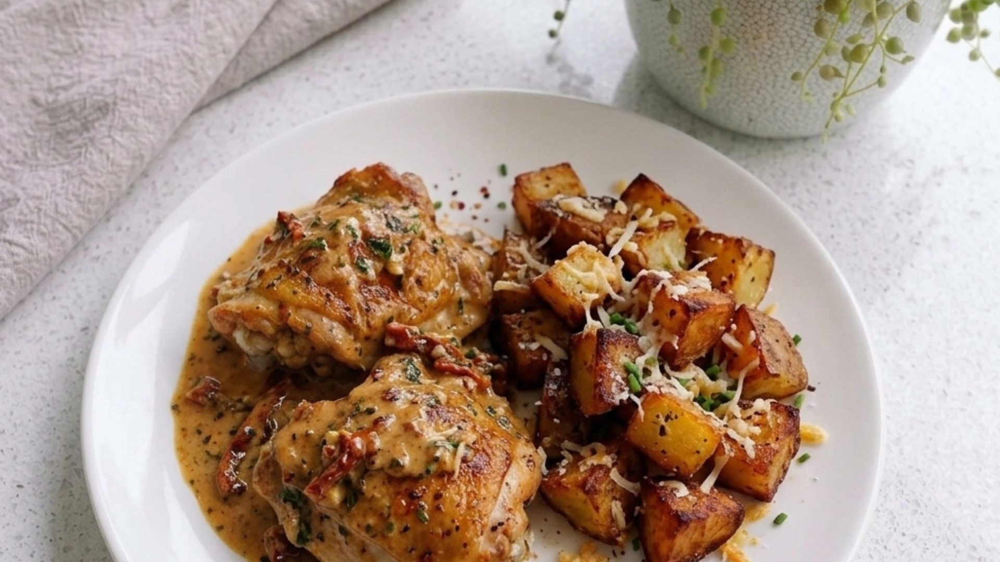

Chicken
Heat oven to 200°C. Toss the cut potatoes in oil and seasoning, and roast for 30–35 minutes until golden.
Season the chicken thighs with paprika, garlic granules and pepper. Fry in a little oil for 5–6 minutes each side until golden and cooked through. Set aside.
In the same pan, add the cream, tomato purée and mixed herbs. Simmer for 3–4 minutes.
Stir in the Parmesan until melted into a smooth sauce. Return the chicken to the pan and coat well.
Scatter grated cheese over the roast potatoes for the last 5 minutes of cooking.
Serve the creamy chicken thighs with the cheesy roast potatoes.
Get new weekly meal plans and family recipes delivered straight to your inbox.
No spam. Cancel anytime. Just good food.